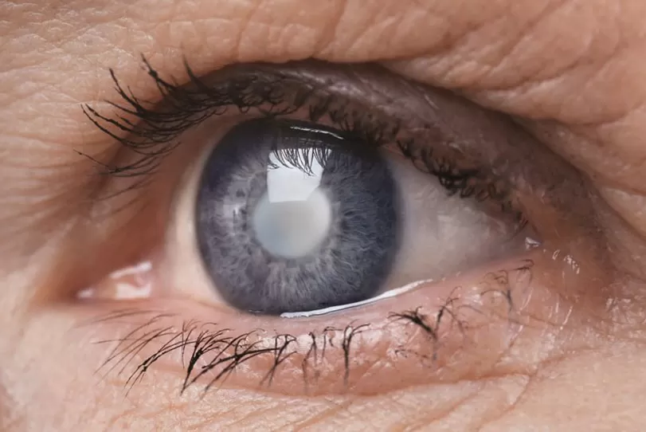

A principal causa da catarata é o envelhecimento natural do cristalino (a lente natural do olho),
que perde gradualmente sua transparência com o passar do tempo. Outros fatores também podem
contribuir para o desenvolvimento da catarata, como diabetes, traumas oculares (pancadas),
uso prolongado de corticoides, exposição excessiva aos raios ultravioleta (UV) sem proteção,
tabagismo e fatores genéticos ou congênitos:
Hereditariedade: alguns tipos de catarata podem estar relacionados a fatores genéticos,
principalmente quando há histórico familiar da doença.
Envelhecimento natural do olho: o risco de desenvolver catarata aumenta com a idade.
Esse processo pode ser acelerado por fatores como diabetes mal controlado, uso prolongado de
corticoides, exposição excessiva aos raios UV sem proteção, tabagismo e traumas oculares.

A catarata geralmente se desenvolve de forma gradual. O principal problema ocorre quando o cristalino perde sua transparência, dificultando a passagem da luz e prejudicando a visão. Entre os sintomas mais comuns estão: